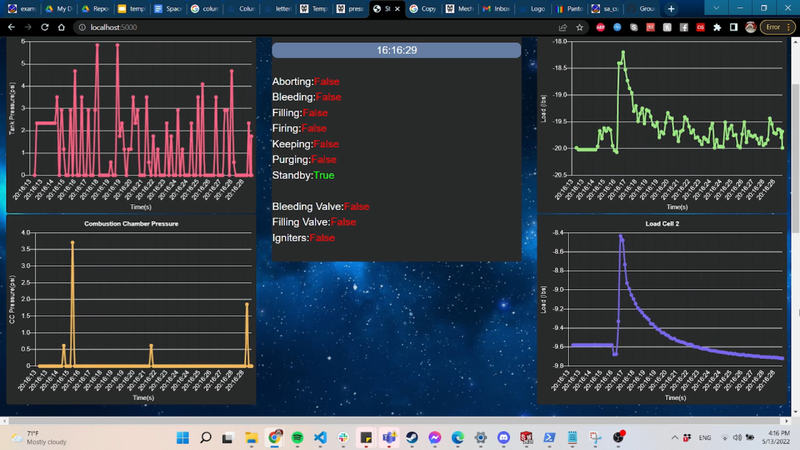
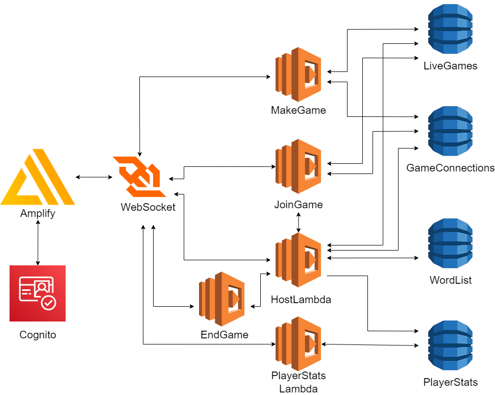
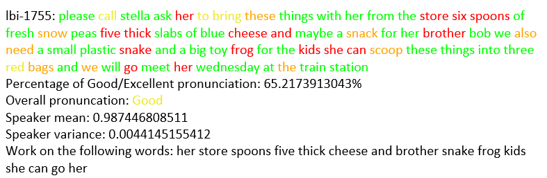
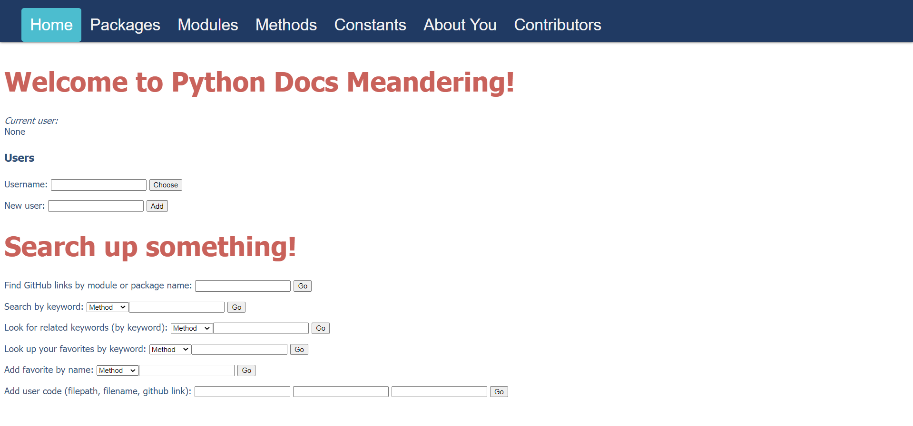
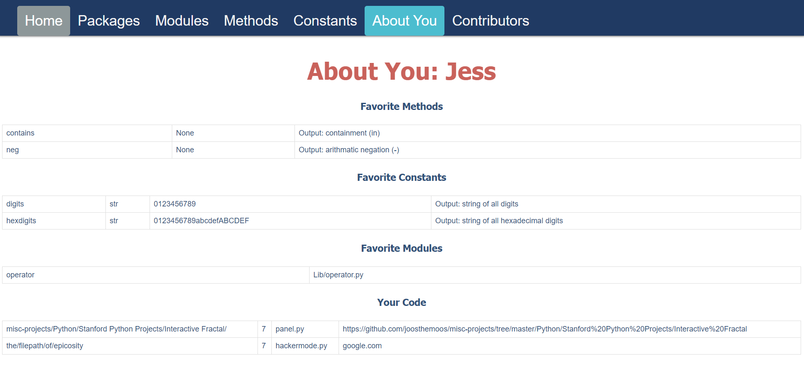

Coding

Although I started coding HTML websites when I was in elementary school, I took an extended break pretty much until the end of high school, when I rediscovered my love for computer science and how easily applicable it is to other things that I love. Now I have mildly more impressive projects (I hope) than simply being able to Inspect-Element the Google homepage.
Rocketry Static Fire Live Telemetry Display
Spring 2022
Languages/toolkits used: Python, Docker, Flask, NodeJS, ReactJS, HTML
Anyone who knows me in any capacity knows that I am not a frontend gal. So, when someone on my rocketry team wanted a live-updating telemetry display of sensor data from our testing, naturally I jumped in. The goal here was to interpret the data that was already streaming over the radio connection and update plots and status bars of various systems. Using this github repo from whoever, it gave me a fairly good start for making this display. It basically is a nice Docker container template that runs a Flask app that real-time updates whenever new data is added to the end of a text file of telemetry that the GroundStationDriver script is reading to from the radio transceiver. The image shown here is a still from a screen recording of one of our static fires.
It was certainly not without its challenges and discoveries though. The first thing I discovered was about the data that was being read in. While reading through the logic of the code that was interpreting the bytes from the load cells (measuring the thrust of the rocket engine during fire), I noticed that the numbers were in the hundreds of thousands after being interpreted, sometimes in the millions when the numbers should have been several orders of magnitude smaller. After a bit of debugging I found it to be an error in the logic of the interpreting code where Two's Complement was not properly accounted for. Fun off-by-one error! Another problem that took me much longer to solve was how to center a flexbox. This drove me mad for at least a day, if not more, but after some terribly janky finagling I got it to work!
This telemetry display currently shows load data from two load cells measuring the rocket's thrust, pressure data from the oxidizer tank pressure transducer, and then shows multiple system status bars. It also shows the time for being able to sync up what was happening on video should the telemetry be screen-recorded. This was a really fun project to take on and was completely outside of my comfort zone, and honestly? I'd do it again if I had the chance.
Wordle++: Multiplayer Wordle
Spring 2022
Languages/toolkits used: AWS WebSocket, AWS DynamoDB, AWS Lambda, Python
As part of COMSW6998 Cloud Computing & Big Data, taught by Prof. Sambit Sahu, we were supposed to do a final group project that would use intriguing aspects of cloud computing to make some kind of functioning application. My group decided to take on multiplayer functionality (something that had never been brought up in any of the projects we had done through the class thus far) and we used Wordle as our base. The whole project was done using AWS tooling.
The application is mostly based around a WebSocket API supported by several Lambdas and DynamoDBs. Users, upon logging in through Amplify/Cognito, are brought to a home screen that gives several options: Join a game, create a game, or view player statistics. If you create a game, you add an instance of a game to a LiveGames DynamoDB and a GameConnections instance that keeps track of players connected to the WebSocket for that game. When the maximum number of connected players join or an amount of time has elapsed, the game begins by sending all players the word to guess, and whoever guesses it first wins! Player statistics show which player has won the most.
Of course, this had many bugs in it and much potential for added functionality. For example, the code had yet to differentiate between a player winning and a player finishing first, and would just send the "Win" screen even if they just got to the bottom. Other than that we had multiple things we wished to implement such as varying word length, amount of players that can join, and joining a specific game, not just a random open game. However, this was all of our first forays into anything game-related or multiplayer-related and creating such a complicated game from scratch was a really exciting time!
Speech Recognition: Pronunciation Assessment and Feedback Tool
Fall 2021
Languages/toolkits used: Shell Scripting, Python, Kaldi, Google Cloud
As part of COMSW6998 Fundamentals of Speech Recognition, taught by Prof. Homayoon Beigi, we were tasked with creating a speech recognition project using the open-source Kaldi toolkit. I decided to work on the issue of pronunciation assessment using ASR methods, creating a rudimentary tool for speakers with highly-accented English speech to assess their own pronunciation and get feedback for what sounds and words to work on.
This turns out to be mildly difficult to do (who knew!) but very fun to work with. The workflow I came up with was to first have a model trained on a corpus of slightly-accented, sometimes nonnative English (based on the TED-LIUM corpus of English TED Talks) that then gets force-aligned with a native English dataset (the LibriSpeech corpus of audiobooks). This alignment then should produce a baseline that can represent highly-intelligible English. With this new model, data from a corpus of highly-accented speech (the Speech Accent Archive) can be compared. Kaldi outputs decoded results in the form of lattices. From lattices, the best path through the lattice determines which phone is present at a given time stamp, and the log likelihood of this phone being correct is considered its "confidence". We extract these confidences, compare the phones to the transcript, and then get a rating for each word! Below you can see what such an output would look like - for ease of reading and color-coding, I outputted the results for each speaker in an RTF format.
This project was very difficult for me, and there are still many places for it to improve, especially when it comes to proper evaluation. Nevertheless, I learned so much, from gaining a hands-on understanding of signals processing and automatic speech recognition, to working with shell scripting (and making such a gorgeous, stage-divided, with-flags-and-everything main script), to working with very, very, unclean data. It's one of those projects where I could have been working on it forever but deadlines happen and semesters end. Thanks again Prof. Beigi for an excellent class and a real challenge!
If you would like to look at the code itself, please email me at jessica.kuleshov@columbia.edu. Otherwise, the paper can be found here.
A Better Way to Search Python Commands - Databases
Spring 2021
Languages/toolkits used: Python, Flask, Jinja, PostgreSQL, Javascript, HTML, Google Cloud
There are many resources online for Python documentation, and they are highly convoluted and difficult to look through. Currently, there does not seem to be any good website where you can easily search through methods, constants, modules, and packages, as well as have a list of favorites and have the ability to take notes on your work.
If you have been facing this problem as well, look no further! In Intro to Databases, together with Sedona Thomas, a fellow Columbia CS student, we made a PostgreSQL database that manages Python packages, modules, constants, and methods. Each page on our front-end contains a list of all of its constituents - Methods contains methods, Modules contains modules, and Constants contains constants, et cetera. People can register as users and then login, which allows them to access add their own favorite methods/constants/packages, which they can then access via the "About You" page (seen below). Users can also submit their own user code on the main page, and can view their submitted code on the About You page as well. There are also multiple ways to search - either by keyword or by related keywords, or searching your favorites. The Packages and Modules pages also have their own lookups, where you can find what each Package and Module contains. There is also a Contributors page that lists every User who has contributed some User code to the database.
The backend, as was mentioned previously, is a PostgreSQL database. The front-end is built on HTML and Javascript housed within the Jinja templates, then accessed by a Python/Flask backend which queries the database. The entire project runs on a Google Cloud Linux node. There are also some features of the database that are not accessible through the front-end, such as an added Notes functionality (where users can take notes regarding code they feel needs more clarification).
While doing this project, I certainly learned a lot, using many tools I have never had the chance to use before. The directions we were given were just enough to get us started with running a Flask app and using SQL, but a lot of the commands Sedona and I ended up figuring out through trial and error, and eventually we came up with a product that we are both quite happy with. I genuinely enjoyed working on this project (despite on occasions unnecessarily short deadlines for certain parts of the project) and now I feel very comfortable working with databases again, should I be presented with the opportunity!
If you would like to look at the code for the database/front-end or have any other questions, please email me at jessica.kuleshov@columbia.edu.
Solving Puzzles and Games - Artificial Intelligence
March 2021
Language used: Python
As part of the Artificial Intelligence class, led by Prof. Ansaf Salleb-Aouissi, we completed a whole slew of mini-coding projects. For me, however, there were two that really stood out in terms of their goal and in their complexity, and those were the projects focused on solving games.
One of my favorite ones is a sudoku-solving algorithm that takes a string of 81 digits and solves the board. This assignment focused on using a backtracking algorithm with a minimum-remaining-value (MRV) heuristic. Forward checking was also employed to reduce the search space after every iteration. The code can either take in one 81-digit string as input in the console or a .txt file as input, depending on whether an input is given or not, and is fairly quick - a maximum of two seconds or so for the most complicated board!
The other assignment was much more complicated and also quite satisfying to run - playing 2048. We were told to think of solving 2048 with an adversarial search approach, where the computer's insertion of a 2 or a 4 is treated as the adversary and you are the maximizing player. Using an expectiminimax algorithm with alpha-beta pruning, my algorithm reached 2048 50% of the time and 1024 40% of the time, with the occasional 512 or 4096 (if I was lucky). The only heuristic employed was the snake-weighting based on a paper from Nie, Hou, and An, which you can find here.
If you would like to look at the code for either of these assignments, please email me at jessica.kuleshov@columbia.edu for access.
Pronoun Checker
Jan. 2020 (ongoing)
Language used: Python
Sometime in January I started getting annoyed that I wasn't always getting my friends' pronouns correct, so I thought of methods to be able to correct myself so that after some practice on my own I could respect people's pronouns.
The result was this very basic pronoun checker (which is still in the works). It uses the Python speech_recognition library and NLTK to be able to read in the speaker's input sentence with a proper name, and then it searches for a correct pronoun in the second sentence.
Currently, it only works with male and female pronouns that are inputted in two .txt files. The issue is that it cannot deal with uncertainty such as gender-neutral names or rarer names. The ever-present issue of coreference resolution is also still there, and at the time I did not understand that determining if the pronoun related to the noun is actually a more difficult problem than I thought it was.
Relevant files are found here.
Brickbreaker
Summer 2019
Language used: Python
As part of the introductory Python class I took at Stanford University,
one of our projects was to create a Brickbreaker game using their proprietary
GUI packages. The result is a fun game!
Files can be found here.